Can the meaning of a word be written as a list of numbers? And can we watch it change?
DHG 502 Digital Approaches in Historical Research · ←→ navigate · 1–9 sections · G go to slide · L laser pointer · F fullscreen
What is word meaning? Three views
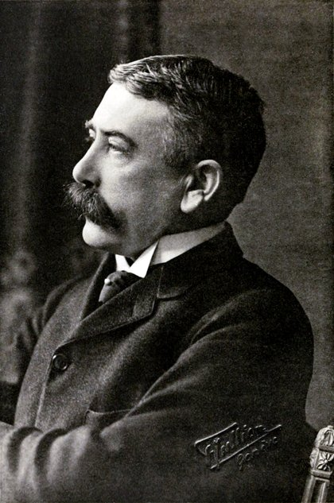
Ferdinand de Saussure1857–1913
“In language there are only differences without positive terms.”
Ludwig Wittgenstein1889–1951
“The meaning of a word is its use in the language.” Philosophical Investigations §43
John Rupert Firth1890–1960
“You shall know a word by the company it keeps.” A Synopsis of Linguistic Theory (1957)
The common thread: do not ask what a word “stands for”. Look at how it is used and at the words it occurs with.
Saussure: a system of differences
Ferdinand de Saussure1857–1913
“In language there are only differences without positive terms.”
開心收到你的來信，我真的很開心！
愉快這次旅行非常愉快，希望下次還能一起去。
快樂他買了一支新手機，興奮地笑了起來，臉上充滿快樂。
幸福雖然他收入不高，但擁有愛他的家人，他覺得自己很幸福。
Four words around “happy”, each with its own place: a word’s meaning comes from how it differs from the others.
Wittgenstein: meaning is use
Ludwig Wittgenstein1889–1951
“For a large class of cases—though not for all—in which we employ the word ‘meaning’ it can be defined thus: the meaning of a word is its use in the language.” Philosophical Investigations §43
What does 打 mean?
📞打電話make a phone call
🏀打球play ball
🚕打車take a taxi
🧶打毛衣knit a sweater
🏷️打折give a discount
🍶打醬油buy soy sauce · “just passing by”
No single dictionary meaning of 打 covers all of these. Its meaning is the way it is used.
Firth: the company a word keeps
John Rupert Firth1890–1960
What company does 革命 (geming) keep across two thousand years of sources?
Zhouyi 周易湯武革命，順乎天而應乎人。Tang and Wu changed the Mandate, in accord with Heaven and in response to the people.
1903 · Zou Rong革命者，天演之公例也；革命者，世界之公理也。Revolution is the universal law of evolution; revolution is the universal principle of the world. (The Revolutionary Army 革命軍)
1925 · Sun Yat-sen余致力國民革命，凡四十年，其目的在求中國之自由平等。For forty years I have devoted myself to the national revolution, seeking freedom and equality for China. (Testament 總理遺囑)
1927 · Mao Zedong革命是暴動，是一個階級推翻一個階級的暴烈的行動。A revolution is an insurrection, an act of violence by which one class overthrows another. (Hunan Report)
The company changes over time: Heaven, then evolution, then the nation, then class, then production. At the end of today we will measure such a change.
The same idea, the same era: what occurs together becomes connected
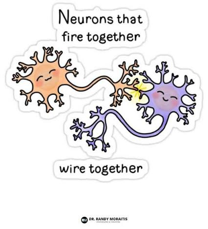
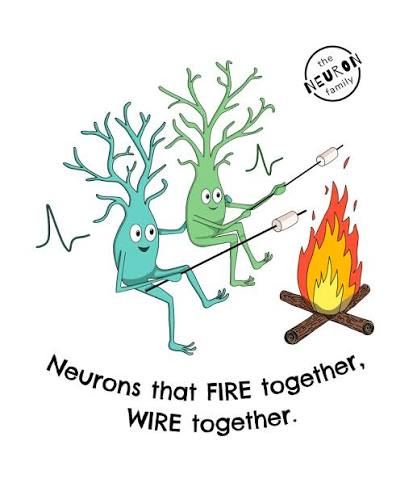
Neuroscience · Hebb (1949)“Neurons that fire together, wire together.”
≈
民主⇄科學自由共和
Linguistics · Harris (1954) · Firth (1957)“You shall know a word by the company it keeps.”
Co-occurrence creates connection. word2vec learns the same way: when two words occur together, their vectors are pulled a little closer.
Zellig Harris: meaning as distribution
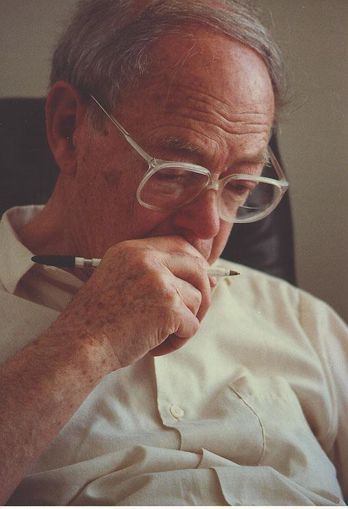
Zellig S. Harris 1909–1992
“If A and B have almost identical environments … we say they are synonyms … If A and B have some environments in common and some not … we say that they have different meanings, the amount of meaning difference corresponding roughly to the amount of difference in their environments.” Distributional Structure (1954)
↑↓ stretch or shrink B · P move B to another position
Stretch B (a more frequent word with the same company): Manhattan and Euclidean change, cosine does not.
For words, we compare directions: cosine similarity
A frequent word gets a long vector simply because it is counted more often. What matters is the pattern of its company, so we measure the angle between two vectors and ignore their length.
Why write it this way? Matrix algebra computes thousands of dot products in one step, for example every word in the vocabulary against one target word. In code: a @ b or np.dot(a, b).
Chen Duxiu 陳獨秀, 〈本志罪案之答辯書〉 《新青年》 6.1, January 1919
Which words occur near 反對 (“oppose”)?
Words inside the window (3 to each side, as in the collocations week):
Count the words around each word and you get its vector: one dimension per context word.
Co-occurrence matrix: what is closest to 孔教?
…
反對
坐
的
中國
…
⋮
⋮
⋮
⋮
⋮
孔教
…
4
0
1
1
…
禮教
…
3
0
2
0
…
火車
…
0
2
1
1
…
⋮
⋮
⋮
⋮
⋮
Only a few rows and columns: a real matrix has one row and one column for every word in the vocabulary. Each row is a word’s vector: v(孔教) = [4, 0, 1, 1] Each column is a context word. (Toy numbers.)
孔教 and 禮教 keep similar company (反對, 的), so their vectors point in similar directions. 火車 keeps different company (坐).
The limits of sparse vectors
A real corpus has tens of thousands of context words, so almost every entry is 0. Storing them wastes space.
孔教
禮教
思考
思想
反對
24
0
0
0
打倒
0
6
0
0
孔子
0
0
11
0
孟子
0
0
0
22
v(反對) · v(打倒) = 0 ← a problem!
孔教 and 禮教 are close in meaning, but they are separate dimensions, so the dot product is 0.
Catch the meaning, forget the words
「言者所以在意， 得意而忘言。」
“Words exist for the sake of meaning; once you have the meaning, you can forget the words.” Zhuangzi, “External Things” 外物
言 words
one column per word · sparse
→
意 meaning
a few directions · dense
Zhuangzi dreaming of the butterfly 莊周夢蝶
Instead of one column per word, we want similar words compressed into shared directions: dense vectors.
Dense vectors: every dimension carries a value
星際效應
詭屋驚凶實錄
後來的我們
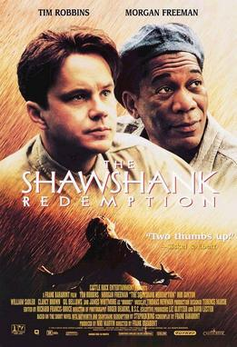
刺激 1995
Each film is just 5 numbers, and films of similar kinds point in similar directions. (Toy numbers.)
A tiny vocabulary: 男, 女, 皇帝, 皇后
男
女
皇帝
皇后
gender
−1
1
−0.97
0.99
royalty
0.02
0.01
1
1
皇帝 = 皇后 − 女 + 男
More words need more dimensions
男
女
皇帝
皇后
啤酒
果汁
gender
−1
1
−0.97
0.99
−0.03
0.02
royalty
0.02
0.01
1
1
0
0
drink
0
0
0
0
0.97
0.98
How many dimensions do you think we needto encode the meaning of a word?
Real word vectors have tens to hundreds of dimensions, and no dimension has a human-readable name.
Vectors and meaning: similar direction, similar meaning
Words with related meanings have small angles; unrelated words have large ones. (Illustrative coordinates.)
Mikolov et al. (2013): word2vec
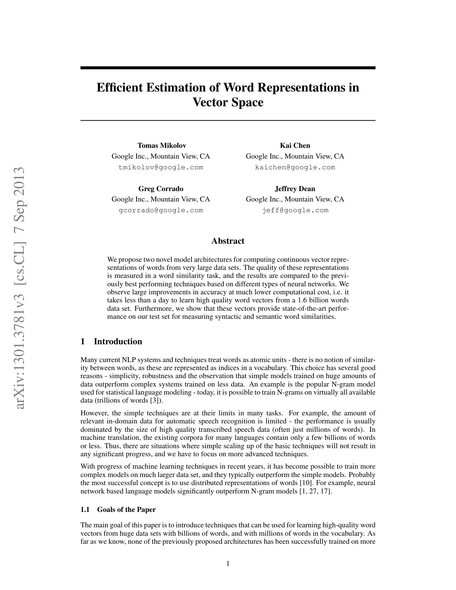
Efficient Estimation of Word Representations in Vector Space
Tomáš Mikolov, Kai Chen, Greg Corrado, Jeffrey Dean Google · arXiv:1301.3781 · 2013
Two architecturesCBOW predicts the centre word from its context. Skip-gram predicts the context from the centre word.
Fast and largeHigh-quality vectors from 1.6 billion words in under a day“less than a day to learn high quality word vectors from a 1.6 billion words data set”
Vector arithmeticking − man + woman ≈ queen
word2vec: learning the vectors from text
Predict a word’s neighbours. Example: Analects 2.15, “Learning without thinking is futile; thinking without learning is perilous.”
No one labels any meanings. To predict neighbours well, the model adjusts every word’s vector on its own.
Step 1: score a pair with the dot product
Every word starts with a random vector. The dot product of a pair is its score: the higher, the more neighbour-like.
real neighbour: 思 think · 學 learn
random word: 思 think · 香蕉 banana
At first the scores are wrong: the random word outscores the true neighbour. Training goal: raise neighbour scores, lower random-word scores.
η (the learning rate) means adding only a fraction, e.g. 0.5. Target and context move towards each other: 學 also gets a bit of 思. The more wrong the score, the larger the step.
Step 3: why does this capture meaning?
開心 and 愉快 rarely occur together, but they share the same neighbours (感到, 非常, 旅程).
cos(開心, 愉快)—
This is Harris’s distributional hypothesis done with arithmetic: same environments, nearby vectors. (Illustration: context vectors held fixed.)
Train your own: Word2Vec in qhchina
from qhchina.analytics import Word2Vec
model = Word2Vec(
sentences,tokenized sentences
vector_size=100,dimensions per word
window=5,window on each side
min_word_count=5,ignore rare words (< 5)
sg=1,1 = Skip-gram, 0 = CBOW
negative=5,random words per real pair
epochs=5,passes over the corpus
workers=4)CPU cores (speed)
model.train()start training
# using the trained model
model.get_vector("幸福") # the vector of 幸福 (100 numbers)
model.most_similar("幸福", topn=5) # the 5 words with the highest cosine
model.similarity("幸福", "快樂") # cosine similarity of two words
Mikolov et al. (2013): after the arithmetic, the closest word vector is the one for queen.
Relations become directions
A relation (man → woman) becomes a direction in the space.
Not designed by hand
Nobody built a “gender” dimension; it emerged from co-occurrence.
Bias is learned too
Vectors inherit the stereotypes of the training corpus.
Words also change their meaning over time
word
earlier sense
later sense
shift
computer
a person who calculates
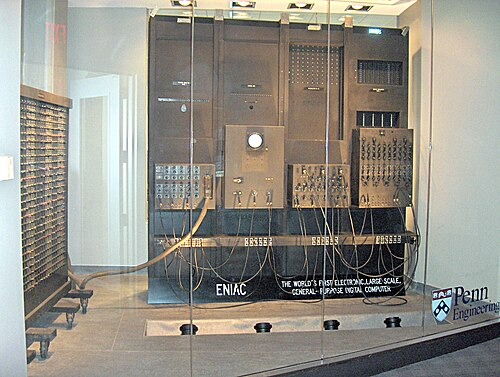
an electronic machine
1940s
經濟
經世濟民: ordering the world, relieving the people
economy (via Japanese keizai)
c. 1900
民主
“lord of the people” 天惟時求民主 (Shangshu)
democracy
late Qing
革命
change of Heaven’s Mandate
revolution; class struggle
1900s–1920s
Conceptual history (Begriffsgeschichte, Reinhart Koselleck) asks when and how such shifts happened. Vectors offer one measure: does a word keep the same company in two periods?
Watching words move (Hamilton et al. 2016)
Each arrow is a change of company: a new sense (gay), a new technology (broadcast), a turn for the worse (awful). After Hamilton et al. 2016, Fig. 1; positions illustrative.
First idea: train one model per period, then compare
Two corpora, two models: the 1920s and the 1950s. Each model starts from its own random vectors.
Ship did not change its meaning, yet it points in different directions in the two spaces. The axes of the two spaces are arbitrary, so cos(ship1920s, ship1950s) means nothing.
Alignment (Hamilton et al. 2016): rotate the 1950s space to fit the 1920s space as closely as possible (orthogonal Procrustes, \(W^*=\arg\min_W\lVert BW-A\rVert^2\)).
Now ship roughly overlaps, while computer has moved from clerks to machines. But stable words never overlap exactly: the alignment itself adds noise.
Dubossarsky et al. (2019): temporal referencing
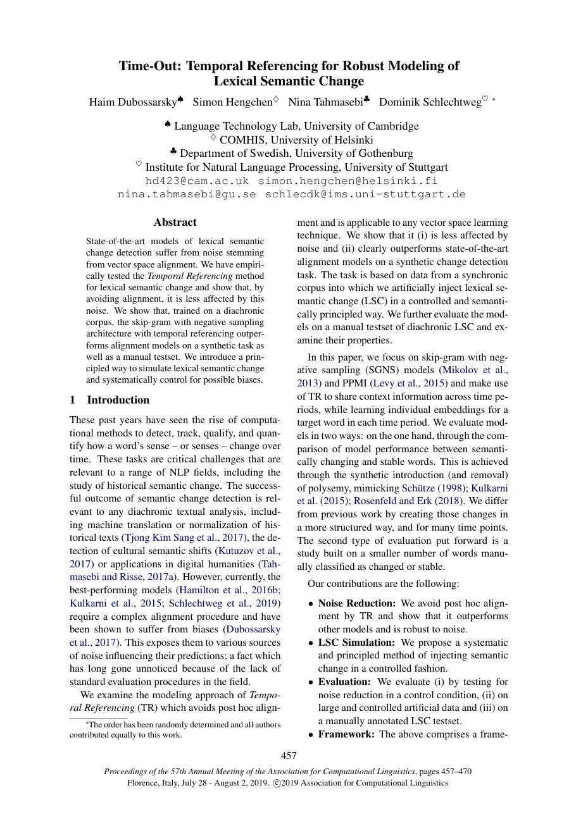
Time-Out: Temporal Referencing for Robust Modeling of Lexical Semantic Change
One corpus, one modelTrain on all periods together. No separate spaces, so no alignment.
Rename the target wordscomputer → computer_1920s in the 1920s texts, computer_1950s in the 1950s texts
Less noiseTested on COHA (1920s–1960s) and on artificially injected change, it beats alignment.
How it works: rename the word in each period
1920s
1950s
Then train one word2vec model on the whole corpus. Each target word gets as many vectors as there are periods, all in the same space, so computer_1920s and computer_1950s can be compared directly with cosine.
One shared space for all periods
change(w) = 1 − cos(w1920s, w1950s)
How do we know that a change is real? Controls
🔀 Shuffled corpus
Mix the sentences of all periods at random. Nothing has really changed, so whatever “change” the model finds is noise.
💉 Injected change
Change a word on purpose: give it more and more of another word’s contexts in each period. Then we know what changed and when.
📋 Known cases
Words whose shift is documented (computer, tape) should score higher than stable ones (ship, horse).
Known cases: average change (1 − cos) of words that changed and words that stayed stable (Dubossarsky et al. 2019)
For historians this is source criticism by other means: a measured shift counts as evidence only after it is compared with what noise alone would produce.
Reading the result: nearest neighbours in each period
computerchanged
→
1920s–1940sonly distant, loosely related neighbours (little data); the sense is still “a person who computes”
1950s–1960sits closest neighbours are the other computer vectors of the 1940s–1960s
a clear break between the 1940s and the 1950s
tapenew dominant sense
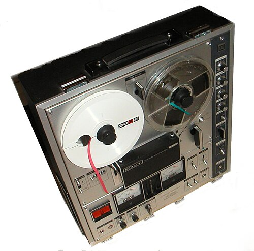
1920s–1940sribbon · paper · adhesive
1950s–1960srecorder · recording · stereo
shipstable
every decadeclosest to ship of the decade before and after; boat, later also spaceship
The cosine says that a word moved. The neighbours, and then the passages themselves, say where it moved and why.
Temporal referencing in qhchina: TempRefWord2Vec
from qhchina.analytics import TempRefWord2Vec
from qhchina.analytics import LineSentenceFile
corpora = {"宋": LineSentenceFile("songshi.txt"),
"明": LineSentenceFile("mingshi.txt")}
model = TempRefWord2Vec(
sentences=corpora,one corpus per period
targets=["民", "太祖"],民 → 民_宋, 民_明
vector_size=100, sg=1)periods sampled in balance
model.train(epochs=5)
# docs: qhchina.org/docs/word_embeddings/temprefword2vec# neighbours of the time-tagged tokens
model.most_similar("民_宋")
model.most_similar("民_明")
# which words did 民 move towards, and away from?
changes = model.calculate_semantic_change("民")
changes["宋_to_明"][:5] # moved towards
changes["宋_to_明"][-5:] # moved away from
Before you trust a curve of meaning change
1
The context words are assumed stable. If 階級 or 人民 also changed, the common ground shifts underneath the target.
2
Each period is a different archive. Genre, OCR quality, censorship, and who could publish all change with time.
3
Frequency matters. Rare words get noisy vectors; a word that becomes frequent can look as if it “changed”.
4
One vector per period. We see an average over all senses, not which sense rose or fell.
Use the measure to find candidates for change, then read the passages behind 民_宋 and 民_明 yourself.
Subtract opposite words to find a direction
Toy example: 女 and 男 agree on every dimension except one, where the signs are opposite.
d₁
d₂
d₃
d₄
d₅
d₆
女
0.4
−0.6
0.9
0.2
−0.3
0.5
男
0.4
−0.6
−0.9
0.2
−0.3
0.5
女 − 男
0
0
1.8
0
0
0
Only d₃ differs: 女 = +0.9, 男 = −0.9.
What the two words share cancels to 0; what is opposite doubles (0.9 − (−0.9) = 1.8). What remains is the direction 女 − 男.
Real vectors are noisy: average over many pairs
d₁
d₂
d₃
d₄
d₅
d₆
Each pair has some noise (the small grey numbers), but the noise points in different directions and cancels out. The shared d₃ survives.
Hence many pairs, not one. This week’s reading (Kozlowski, Taddy & Evans 2019) finds class and gender dimensions in a century of books this way.
Project every word onto the direction: a “femininity” score
The score reflects usage in the corpus, stereotypes included (Bolukbasi et al. 2016). For historians that is the point: a corpus records the stereotypes of its time.
Another direction: “adjectiveness”
Pairs with the same meaning but a different part of speech:
Final project proposal: due Friday 20 Nov, 9:00 am
📄 one full page.docxTimes New Roman 12single-spacedindividually or in a group of up to 3
Author(s)
Your name, or the names of all group members (max. 3)
Tentative title
A working title; it may change later
Research questions
Three questions or hypotheses you would like to explore
Data
Which sources? Where from, and how much? How much work is needed to digitize them? Is it enough data for the method you chose?
Methods
Any method from the course, or a combination: collocations · topic modeling · network analysis · bias analysis · OCR · word2vec · agentic AI
Next homework: chatting with a historical figure’s texts
In groups, choose a historical figure and collect digitized texts in .txt format: the figure’s own works (novels, articles, letters …) or historical documents about them. I will turn your texts into a searchable database for a RAG chat application (retrieval-augmented generation).
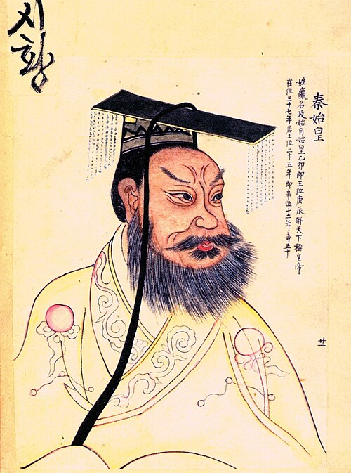
秦始皇
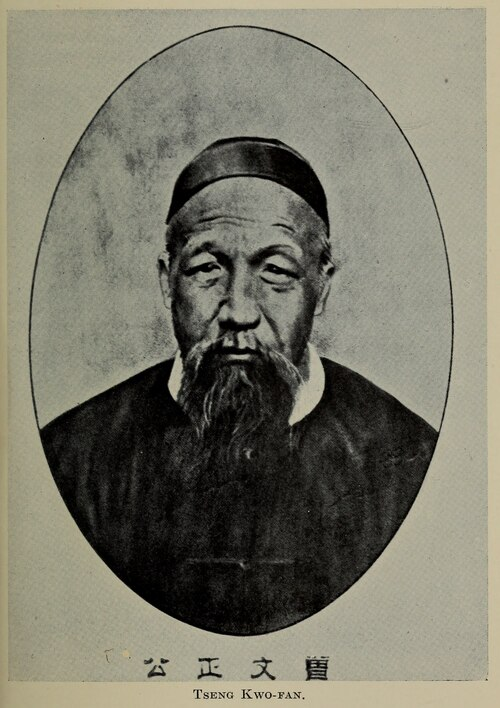
曾國藩梁啟超
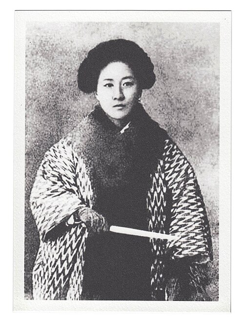
秋瑾
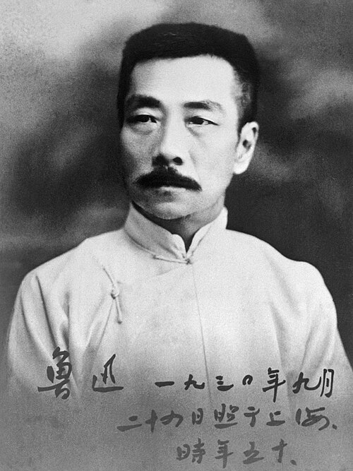
魯迅
Sun 15 Nov · 6:00 pmSubmit your .txt files
one set per group, at least 1 million characters (about 250,000 words)
Mon 16 Nov · in classChat with your sources
ask questions, check the answers against the texts
Tue 24 Nov · 9:00 amGroup reflection essay
Assignment 2: what did the application get right and wrong, and why?
Many sources come as PDFs: convert them to .txt first (extract the text layer, or run OCR as in Week 6 for scans) and check the result. Plain text only (UTF-8), plus a short list of where each file comes from.

 詭屋驚凶實錄
詭屋驚凶實錄 後來的我們
後來的我們 Tomáš Mikolov, Kai Chen, Greg Corrado, Jeffrey Dean
Tomáš Mikolov, Kai Chen, Greg Corrado, Jeffrey Dean